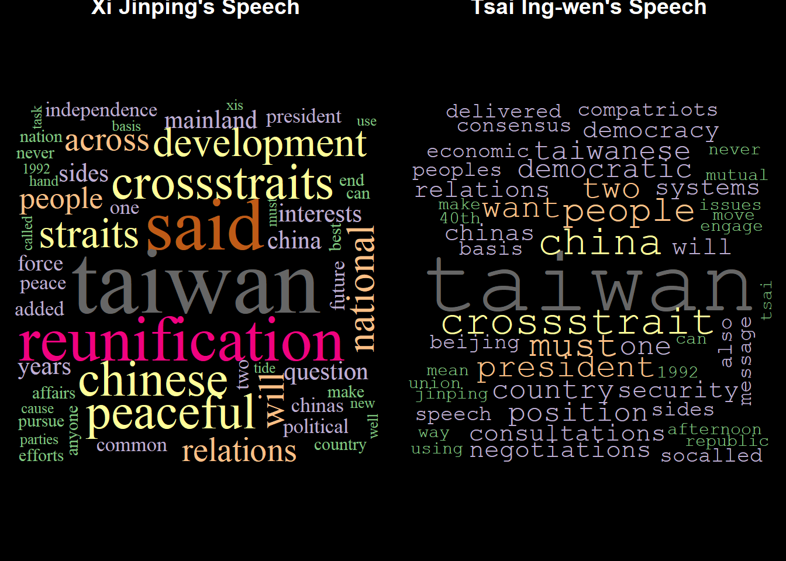
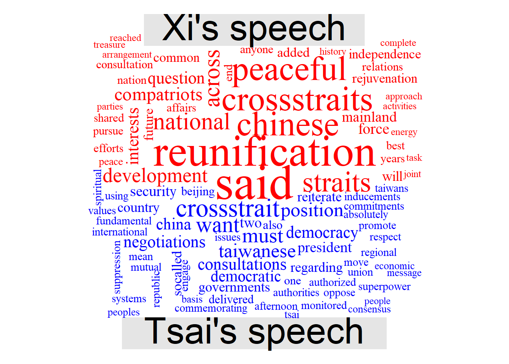

JMSC 6116 Lecture 1: A Deep Dive into Xi and Tsai’s Taiwan Speech
King-wa Fu
January 18, 2018

This short article aims to analyze and compare the English-version speeches made by Xi Jinping “Message to Compatriots in Taiwan” and Tsai Ing-wen’s response statement.
First at all, we install the required libraries and load them into the system.
if (!require("tm")) install.packages("tm", repos="https://cran.cnr.berkeley.edu/")
if (!require("wordcloud")) install.packages("wordcloud", repos="https://cran.cnr.berkeley.edu/")
if (!require("wordcloud2")) install.packages("wordcloud2", repos="https://cran.cnr.berkeley.edu/")
if (!require("plotly")) install.packages("plotly", repos="https://cran.cnr.berkeley.edu/")Then, let’s obtain the copy of Xi Jinping’s speech.The file is already uploaded to my GitHub in plain text format. The first five lines of his speech are displayed for checking.
con <- url("https://raw.githubusercontent.com/jmsc-bc4j/JMSC6116_public/master/xi_taiwan.txt") # Establish a connection via url
xi <- readLines(con) # Read line by line from the connection to a string array xi
close(con) # Remember to close the connection after use
xi[1:5] # List the first five lines of Xi's speech## [1] "Highlights of Xi's speech at Taiwan message anniversary event"
## [2] ""
## [3] "President Xi Jinping delivered a speech at a gathering held Wednesday in Beijing to commemorate the 40th anniversary of issuing Message to Compatriots in Taiwan. "
## [4] ""
## [5] "Here are highlights of President Xi's speech:"Next, we get the copy of Tsai’s speech.
con <- url("https://raw.githubusercontent.com/jmsc-bc4j/JMSC6116_public/master/tsai_taiwan.txt")
tsai <- readLines(con)
close(con)Then, we define a R function, namely Preprocessing, to convert all characters into lower case (consistency for counting purpose), remove the punctuations and “stopwords”, and “clean” the text data into a format for next step. The first portion of the “cleaned” version of Xi’s speech are displayed.
Preprocessing <- function(doc){
#create corpus
doc.corpus <- Corpus(VectorSource(doc))
#clean up
doc.corpus <- tm_map(doc.corpus, function(x)chartr("ABCDEFGHIJKLMNOPQRSTUVWXYZ","abcdefghijklmnopqrstuvwxyz",x))### Convert to lower case
doc.corpus <- tm_map(doc.corpus, removePunctuation) ### remove punctuation
doc.corpus <- tm_map(doc.corpus, function(x)removeWords(x,stopwords("english"))) #### remove stopwords
return(doc.corpus)
}
xi <- paste(xi,collapse=" ") # Collapse into one single line
tsai <- paste(tsai,collapse=" ")
xi.p <- Preprocessing(xi) # Send the array xi to the function for data cleaning
tsai.p <- Preprocessing(tsai) # Output the results to xi.p and tsai.p (class "Corpus")
substr(xi.p$content,1,200) # Inspect the first 200 words of Xi's "cleaned" speech## [1] "highlights xis speech taiwan message anniversary event president xi jinping delivered speech gathering held wednesday beijing commemorate 40th anniversary issuing message compatriots taiwa"Ok. So far so good. We now compare the highest frequency terms used in Xi and Tsai’s speeches . To do this, a term document matrix, which stores terms used (by rows) and the two leaders (by columns), is created.
tdm <- TermDocumentMatrix(Corpus(VectorSource(c(xi.p$content,tsai.p$content)))) # Create a term document matrix
tdm <- as.matrix(tdm) # convert it into a standard matrix
colnames(tdm) <- c("Xi's speech","Tsai's speech") # Assign the names to the columnsHere you go. The top-5 high frequency term plot is presented. The variable “Num_of_term_shown” is defined to control the number of displayed terms. You modify the number, i.e. first line “Num_of_terms_shown <- 5” which means 5 is asigned to the variable “Num_of_terms_shown”, and rerun the program to see the changes.
Num_of_terms_shown <- 5
xi_freqterm <- tdm[,"Xi's speech"]
xi_barplot <- data.frame(name=names(xi_freqterm),y=xi_freqterm)
xi_barplot <- xi_barplot[order(xi_barplot$y,decreasing=TRUE),]
xi_barplot$name <- factor(xi_barplot$name, levels = xi_barplot$name)
xi_barplot <- xi_barplot[1:Num_of_terms_shown,]
tsai_freqterm <- tdm[,"Tsai's speech"]
tsai_barplot <- data.frame(name=names(tsai_freqterm),y=tsai_freqterm)
tsai_barplot <- tsai_barplot[order(tsai_barplot$y,decreasing=TRUE),]
tsai_barplot$name <- factor(tsai_barplot$name, levels = tsai_barplot$name)
tsai_barplot <- tsai_barplot[1:Num_of_terms_shown,]
p1 <- plot_ly(xi_barplot, x = ~name, y = ~y, type = 'bar',
text = ~y, textposition = 'auto', name = "Xi Jingping's Speech",
marker = list(color = 'red',
line = list(color = 'red', width = 1.5)))
p1 <- layout(p1, title = "", xaxis = list(title = ""), yaxis = list(title = ""))
p2 <- plot_ly(tsai_barplot, x = ~name, y = ~y, type = 'bar',
text = ~y, textposition = 'auto', name = "Tsai Ing-wen's Speech",
marker = list(color = 'green',
line = list(color = 'green', width = 1.5)))
p2 <- layout(p2, title = "Top 5 Terms Used in Xi Jingping/Tsai Ing-wen's Speech" , xaxis = list(title = ""), yaxis = list(title = ""))
p <- subplot(p1,p2,shareY=T)
p <- layout(p, showlegend = T)
pQuestion: is term frequency a good way for comparison? If not, what is a better option? How can we make a better plot? Hints:
print(paste0("Total number of terms of Xi's speech (cleaned version):",sum(tdm[,"Xi's speech"])))## [1] "Total number of terms of Xi's speech (cleaned version):678"print(paste0("Total number of terms of Hu's speech (cleaned version):",sum(tdm[,"Tsai's speech"])))## [1] "Total number of terms of Hu's speech (cleaned version):470"Next, we visualize the text frequency by using wordcloud function and put them side-by-side.
min.freq <- 2 # Minimium number of word frequency
par(mfrow=c(1,2)) # 1x2 panel plot
par(mar=c(0.5, 0.5, 0.5, 0.5)) # Set the plot margin
par(bg="black") # background color is black
par(col.main="white") # Title color is white
wordcloud(xi.p, scale=c(5,.5),min.freq=min.freq, max.words=Inf, random.order=F, colors=brewer.pal(8, "Accent"),family="serif")
title("Xi Jinping's Speech")
wordcloud(tsai.p, scale=c(5,.5),min.freq=min.freq, max.words=Inf, random.order=F, colors=brewer.pal(8, "Accent"),family="mono")
title("Tsai Ing-wen's Speech")
Finally, we generate a comparison wordcloud, which compares the relative frequency with which a term was used in the two speeches. For example, Xi used the word “reunification” and “said” more frequenctly than did Tsai and the word cloud thus prints the term “reunification”, “comnpatriots” and “said” in the side of Xi. By the same token, you find “taiwaness”, “crossstrait”, “democracy”, and “consultation” are closer to Tsai’s side. The plot shows the difference between the language usage of the leaders and sheds light on the discourse of their speeches.
comparison.cloud(tdm,max.words=100,random.order=FALSE, colors=c("red","blue"),family="serif")